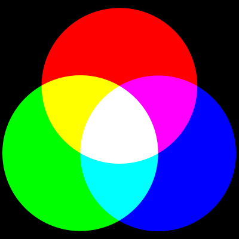

title: Additive Primary Colors description: The additive method of color mixing is based on the assumption that you start with black. That is, if there are no other colors present (the image is black) and you add red, the image appears red. If you then add blue, the image appears magenta. ms.assetid: 4ecc1d29-92fe-46b6-bd65-d385a16f83d7 keywords:
The additive method of color mixing is based on the assumption that you start with black. That is, if there are no other colors present (the image is black) and you add red, the image appears red. If you then add blue, the image appears magenta.
The three additive primary colors are red, green, and blue. The following figure illustrates additive primary color mixing.

Â
Â